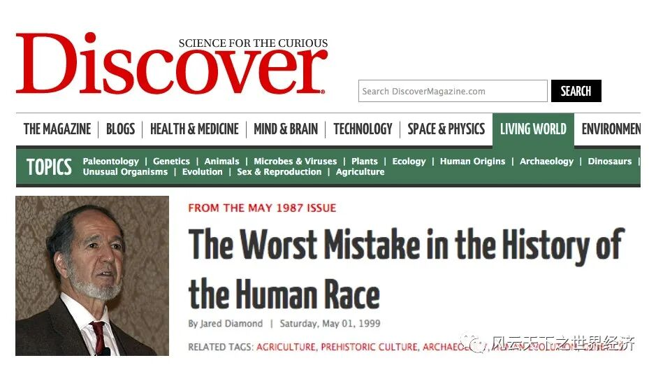
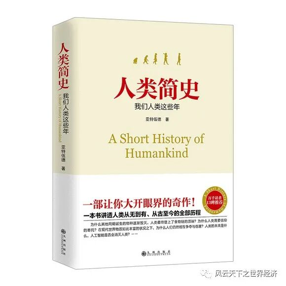
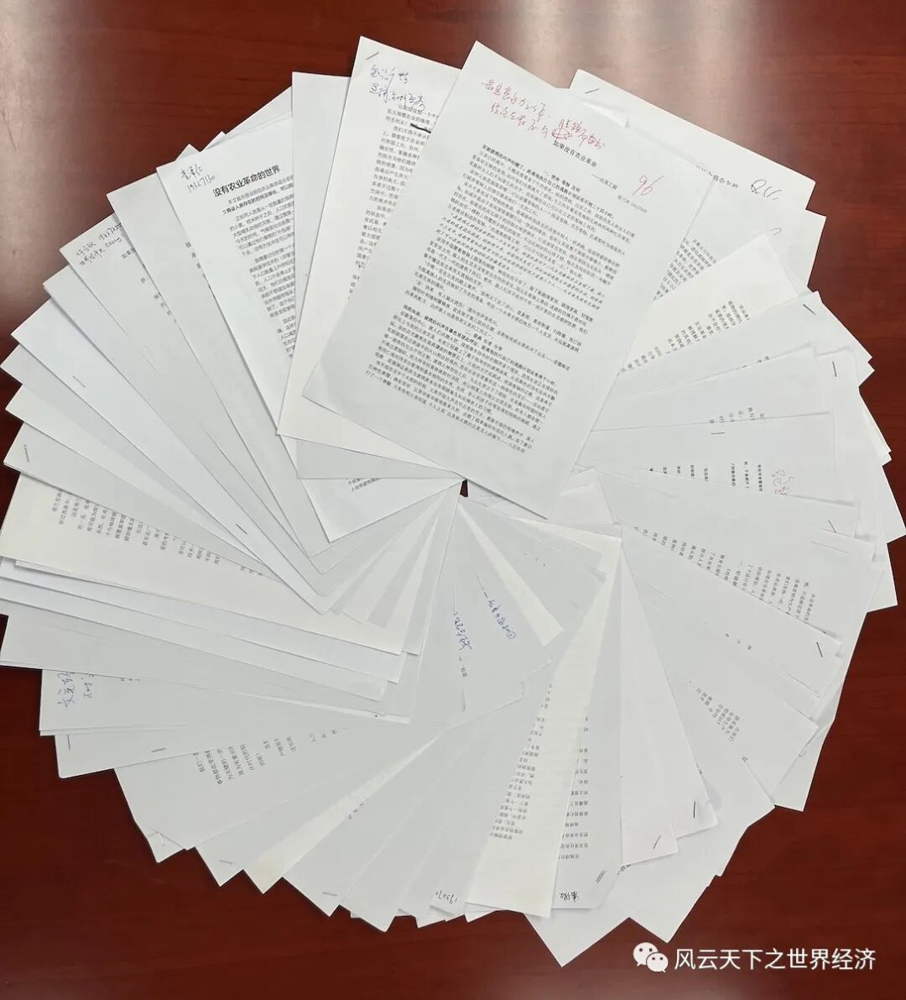

我们将重建一段经济史，一段没有农业革命的经济史。
当我们追溯现代物质文明的最初起点时，大多数人会把目光投射到那场发生在距今一万两千年的经济巨变上。在那个时点，人类告别了他们实践时间最长也最为稳妥的一种生存模式——狩猎与采集，开始被卷入到一种后来被称为“农业革命”的混沌状态，并一路迤逦而来直到今天。
如果今天的繁华是人类无法割舍的眷恋之地的话，那么农业革命无疑是我们迈向更好生活最具决定意义的一步。
但是，并不是所有人都对这场重塑我们祖先生活的“革命”心存感念。
戴蒙德不无忧虑地说：“研究农业起源的考古学家已经重建了一段严酷的历史，一段我们在人类史上造作了最大失误的历史”，这个失误扼杀了通往更加美好的“诱人福地”的一切可能。

贾瑞德·戴蒙德和“人类史上最大的失误”
人类学家尤瓦尔·赫拉利在《人类简史》中更是将这一段历史斥为“人类史上最大的骗局”，农业革命的本质是让更多的人以更糟糕的状态活下去。这是一场我们和动植物做的荒唐交易，这场交易不亚于“浮士德和魔鬼的勾当”，把人类推向了万劫不复的深渊。

尤瓦尔·赫拉利《人类简史》
既然有这么多人不喜欢“农业革命”，为什么不干脆将它从经济史上抹掉呢？
这个看似疯狂的举动，在世界经济史的课堂上变得不再那么异想天开，因为我们有一万两千年的经济史所赋予的“上帝之眼”。从希罗多德到汤因比，大历史学家也有这种借用重构的方式来审视历史的喜好。
余世存在《人间世》中说：“对历史进行假设极为重要的意义在于消解‘历史必然性’。”
乔尔·莫克尔在《启蒙经济》一书中提醒我们，在思考经济史时，应尽量避免陷入“后视之明谬误”（Hindsight bias）。“当我们知道发生了某一事件时，我们会倾向于认定它是不可避免的，并且会重新解读所有的先决条件，认为是他们推动结果的出现”。其最典型的表现就是“存在即合理”的思维窠臼，敢于去想，像马克思一样“怀疑一切”，才有可能带你远离“成王败寇”的丛林社会。
“假如没有农业革命，人类将会怎样？”就是在这些批判精神指引下设计出来的一场重建经济史的“思维实验”。
当我打算把这一项挑战交付给一群刚刚步入经济史之门的年轻人时，我丝毫没有担心他们会有负这个让人有点匪夷所思的使命。永远不要忘了这是与元宇宙共生的一代，他们的想象力一直会给你惊喜。
在这个略带戏谑的命题里，他们恣意畅想，仿佛用铅笔的轮廓悄悄透漏给我们一个关于人类经济演进的秘密故事。
理性的乐观里，密不透风的逻辑感让我们窥见了另一种积极的可能。
审慎的忧虑里，既有我们对于农业革命宿命般的留恋，也有逃离现世悲苦的冲动。
无垠的怀想里，年轻思绪展现出的蓬勃想象空间让你触手可及。
理性的乐观
相比起农业社会，狩猎采集的生活充满着不确定性，这样的不确定性可以带给人类差异化的发展，甚至是另外的革命。 ——黄曼宁 19327103
或许对于农业革命并未发生的设想，可以帮助我们回顾人类发展历史脉络，正如戴蒙德对农业革命的失误总结那样，帮助我们更好地思考和构建当下和未来的人类文明。 ——李隽 19327117
人实在有太多能干的事了，无论在哪个时代，只要你想，总有你钻研不完的东西，欣赏不完的美。还能免除当代社会很多无奈的被动摄取。 ——郝晨阳 21218281
狩猎时代的创新是一种全民创新，没有了劳作规律的约束，每个人都有充分的时间思考怎样改进生活，怎样实现技术的创新。 ——张寒池 19327286
假如没有农业革命，此时此刻，我们应该不会坐在松软的沙发上，而是阳光饱和、空气清新的树洞里。 ——唐子桢 19327209
没有农业革命的人类社会将会孕育出多么粗犷、自然而又伟大的现实主义艺术作品，这些艺术作品最强大的地方在于，它将具有生生不息的力量，引发人类一代又一代的共鸣。 ——杨佳欣 19327260
“稳定”、“缓慢”与“闲暇”将是此时人类社会的生活特征。 ——张雨晨 19327299
四千年来，族人们的生活里一直有壁画，歌谣和星空，而巫突然觉得，这样的日子一直持续下去似乎也不坏。 ——程弋洋 19327040
审慎的忧虑
没有农业的人类社会也许会产生文明，却无法产生很好的文化。 ——刘芷璇 19327160
如果没有农业革命，那么农业革命便还在路上。 ——范唯 19327050
现代人已经见识到科技发展给人类生活带来的变化，所以尽管许多人对狩猎采集的闲适生活状态心怀向往，他们未必愿意以舍弃现在的生活作为交换。 ——廖志铭 19327136
物种的成功演化与经济、技术的进步并不意味着人类能真正从中获得幸福。 ——王先子 19327222
也不是说农业种植就完全没有颗粒无收的荒年风险，只是流沙在掌心握不住也诱人，抵抗不确定性和稳定生活的懒惰常常引人走向不可逆的未来。 ——范之琳 19327051
如果没有农业革命，没有它赋予我们文明的无限可能，外部世界以及人类本身的真面目将难以为我们所知，人类文明很可能将就此止步于那个朴素无知的阶段，就像一颗没能形成燎原火势的微弱火星，最终湮灭于无尽的宇宙之中。 ——余博涵 19327272
如果没有农业革命，也许人类个体在短时间内将会拥有更高的生活幸福感，更强健的体魄。但是，当我们把目光放到更长远的将来，以及整个人类的命运时，没有农业革命，人类就像是井底之蛙，无法探寻井外宽广无垠的世界，更没有机会来改变整个人类物种的命运。 ——蔡金威 19327007
农业革命为人类带来的并非智慧或是幸福，而是结构。 如果毁灭是不可避免的结局，那么农业革命就宣告了人类在这条道路上无声的反抗与进击，即便无法改变毁灭这个事实，它也展现出了人类作为宇宙万物一份子所具有的尊严与意志。 在狩猎采集社会中，人口总数、生产总值并没有显著的变化，人类的历史基本处在轮回式的运行阶段，人类的组织形态呈现出分散，混沌而又和平的特征。 ——翟恒宇 19327281
无垠的怀想
当人类的身体不再禁锢在一抔又一抔黄土上，思想上同时得到了解放，无垠的海域则代表着更多的可能性。 ——苏柏杨 19327197
人世间的悲喜剧一直在上演，我们宛如夕阳下起舞的鸟儿，奋力追寻着未知的明日。此刻，我也想与农业革命前的人类对话，向他们讲述农业革命后的人类的经历，询问他们农业革命是否应该发生和进行。同一片苍穹下，我们仿佛在月下相互遥望，展望人类的未来。 ——朱静萩 19327317
如果没有农业革命，我们可能便如树上的男爵，在林木间辗转腾挪。 如果没有农业革命，政治组织、经济交换、城市文明、大规模战争如此种种，都将面目全非，也许竞不复存在。 ——帖沐祯 19327211
如果没有农业革命，人类或许会因闲适而满足，因无知而无虑，因简单而幸福。 ——翟恒宇 19327281
